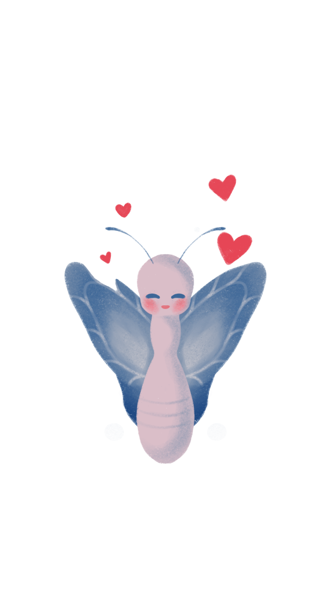
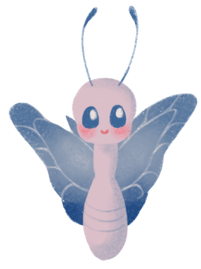
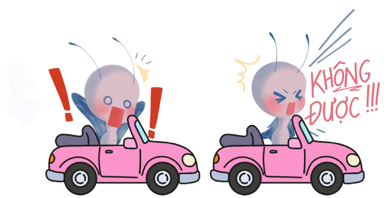
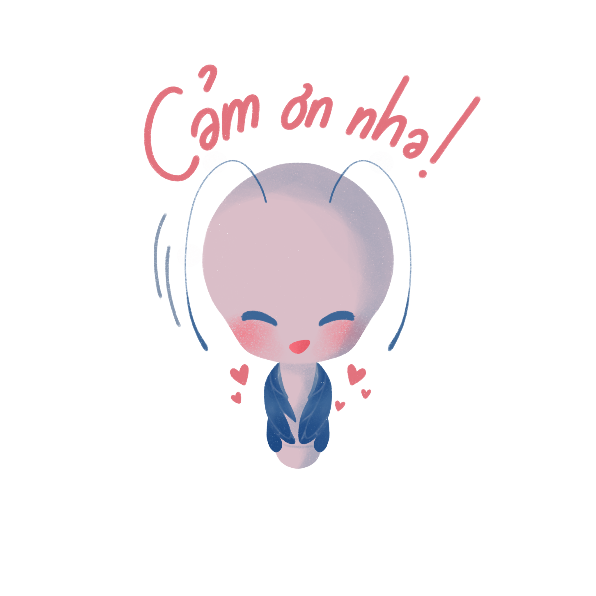

PHÁ KÉN MANG ĐẾN ĐIỀU GÌ
Một cộng đồng dành cho sinh viên
Nơi những câu chuyện thật được lắng nghe, những cảm xúc được đồng cảm và những con người tìm thấy sự kết nối với nhau.
Một nơi bạn không cần phải tỏ ra ổn
Bạn được là chính mình, được thừa nhận những điều chưa hoàn hảo và không cần che giấu cảm xúc thật.
Một hành trình của riêng mỗi người
Mỗi câu chuyện, mỗi trải nghiệm đều có một cách để được kể và được cảm nhận khác nhau.
Một hành trình vẫn đang được tiếp tục
Bởi trưởng thành không có một điểm kết thúc, và mỗi ngày đều là một cơ hội để hiểu mình hơn, bước tiếp và trở thành phiên bản mình mong muốn.
CHUỖI CHƯƠNG TRÌNH MÙA 2


2 NGÀY 1 ĐÊM
Hành trình trải nghiệm giúp sinh viên kết nối với bạn bè, giảng viên và chính bản thân mình thông qua các hoạt động tập thể, sẻ chia và khám phá giới hạn cá nhân.
XEM CHI TIẾT
MÌNH CỦA NGÀY HÔM NAY
Đêm nhạc kịch truyền cảm hứng kết hợp âm nhạc và storytelling, mang đến những câu chuyện rất “đời” về tuổi trẻ, sự trưởng thành và hành trình đi tìm giá trị riêng của mỗi người.